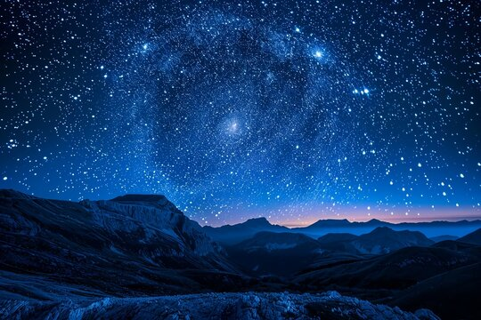
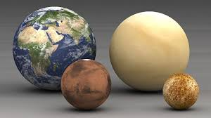
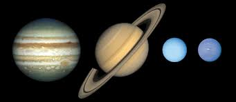
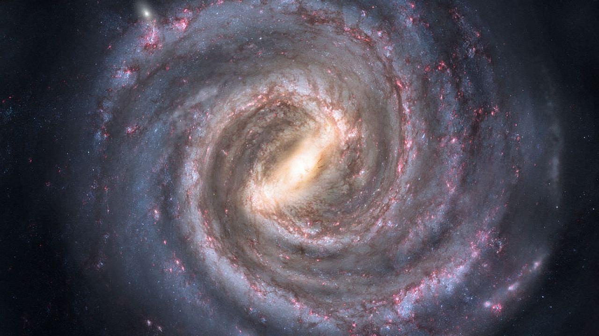
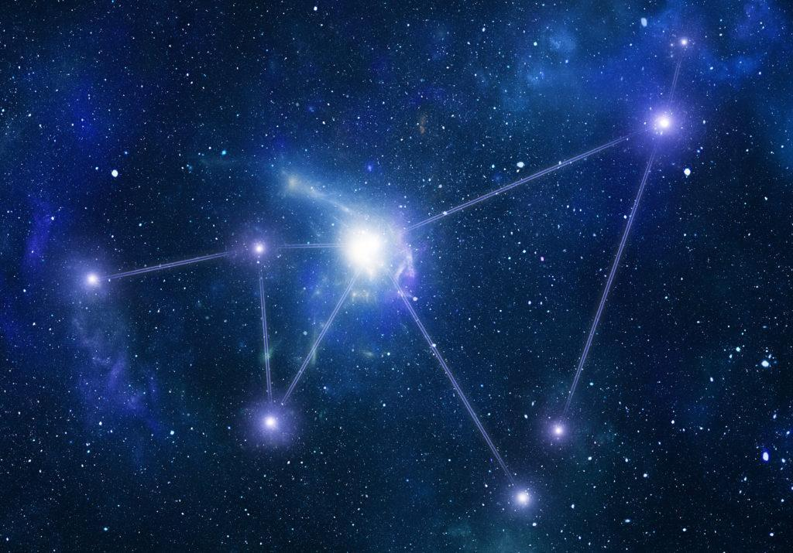

O universo é vasto, e muitos de seus mistérios são desvendados por meio da observação dos astros. Nesta página, você aprenderá sobre alguns dos diferentes tipos de corpos celestes.
Estrelas: O que são, como se formam e como se tornam supernovas?
As estrelas são enormes esferas de gás, principalmente hidrogênio e hélio, que geram luz e calor devido a reações nucleares em seus núcleos. Elas são os corpos celestes mais visíveis no céu e têm um papel fundamental na formação e evolução do universo.
As estrelas se formam a partir de nuvens gigantes de gás e poeira, chamadas nebulosas, que, sob a ação da gravidade, começam a se contrair. À medida que a pressão e a temperatura aumentam, ocorre a fusão nuclear, liberando grandes quantidades de energia, o que marca o nascimento de uma estrela. Com o tempo, essas estrelas evoluem, e dependendo de sua massa, elas podem se transformar em supernovas, uma das explosões mais poderosas do universo. Quando uma estrela massiva exaure seu combustível nuclear, ela entra em colapso, criando uma onda de choque que destrói a maior parte da estrela e libera enormes quantidades de energia. O remanescente dessa explosão pode se transformar em um buraco negro ou uma estrela de nêutrons, dependendo de sua massa.

Planetas: Diferenças entre rochosos e gasosos no Sistema Solar
Os planetas são corpos celestes que orbitam estrelas, como o Sol, e são compostos por diferentes materiais. No nosso Sistema Solar, existem dois tipos principais de planetas: rochosos e gasosos.
 Planetas rochosos: São planetas formados por materiais sólidos e rochosos, como a Terra, Marte, Vênus e Mercúrio. Eles têm superfícies sólidas, mas podem ter atmosferas mais finas. Esses planetas estão localizados mais próximos ao Sol.
Planetas rochosos: São planetas formados por materiais sólidos e rochosos, como a Terra, Marte, Vênus e Mercúrio. Eles têm superfícies sólidas, mas podem ter atmosferas mais finas. Esses planetas estão localizados mais próximos ao Sol.

Planetas gasosos: São planetas gigantes compostos principalmente por gases como hidrogênio e hélio. Júpiter, Saturno, Urano e Netuno são exemplos desse tipo. Eles não possuem uma superfície sólida, e sua grande massa os torna enormes em comparação aos planetas rochosos.

A Terra é o único planeta rochoso conhecido a ter condições ideais para a vida, enquanto os planetas gasosos, com suas atmosferas densas e temperaturas extremas, oferecem ambientes hostis à vida como a conhecemos.

Buracos Negros: Como se formam e por que são tão misteriosos
Os buracos negros são regiões no espaço onde a gravidade é tão intensa que nada pode escapar de sua atração, nem mesmo a luz. Eles se formam quando uma estrela massiva entra em colapso ao final de seu ciclo de vida, resultando em uma concentração de matéria em um ponto de densidade infinita, chamado singularidade.
 A "fronteira" de um buraco negro é chamada de horizonte de eventos, que é o ponto sem retorno: uma vez que algo ultrapassa essa fronteira, não há como escapar. A razão pela qual os buracos negros são tão misteriosos é que, devido à sua imensa gravidade, eles distorcem o espaço-tempo e desafiam a física convencional. Mesmo que não possamos vê-los diretamente, sabemos de sua existência por meio dos efeitos que causam em objetos próximos, como estrelas que orbitam algo invisível ou a emissão de radiação de matéria sendo atraída para eles.
A "fronteira" de um buraco negro é chamada de horizonte de eventos, que é o ponto sem retorno: uma vez que algo ultrapassa essa fronteira, não há como escapar. A razão pela qual os buracos negros são tão misteriosos é que, devido à sua imensa gravidade, eles distorcem o espaço-tempo e desafiam a física convencional. Mesmo que não possamos vê-los diretamente, sabemos de sua existência por meio dos efeitos que causam em objetos próximos, como estrelas que orbitam algo invisível ou a emissão de radiação de matéria sendo atraída para eles.

Galáxias: Tipos de galáxias e a Via Láctea
As galáxias são enormes concentrações de estrelas, gás, poeira e matéria escura, todos mantidos unidos pela gravidade. Elas variam em forma, tamanho e composição, mas podem ser classificadas em três tipos principais:
→ Galáxias espirais: Como a Via Láctea, a galáxia onde vivemos. Elas têm braços curvados que se estendem a partir de um núcleo central, com estrelas, gás e poeira, e geralmente apresentam grandes quantidades de estrelas jovens.
→ Galáxias elípticas: Têm uma forma arredondada ou oval e geralmente contêm estrelas mais velhas e menos gás e poeira. Elas podem ser pequenas ou extremamente grandes.
→ Galáxias irregulares: Como o nome sugere, essas galáxias não têm uma forma definida. Elas podem ter sido distorcidas por interações gravitacionais com outras galáxias ou simplesmente não têm uma estrutura clara.
A Via Láctea é uma galáxia espiral com mais de 100 bilhões de estrelas, incluindo o Sol, e possui um núcleo denso de estrelas velhas. Ela tem aproximadamente 100.000 anos-luz de diâmetro e é apenas uma entre bilhões de galáxias no universo.

Constelações: O que são, como identificá-las e sua importância
As constelações são agrupamentos de estrelas que, vistas da Terra, formam padrões no céu. Ao longo da história, essas formações foram usadas para orientar viajantes, navegadores e até para contar histórias mitológicas. As constelações não têm uma ligação física entre as estrelas que as compõem, elas estão apenas em linha de visão quando observadas da Terra.
Para identificar constelações, é importante conhecer as principais delas, como Órion, Ursa Maior e Escorpião, e aprender como os padrões se organizam em diferentes épocas do ano. As estrelas mais brilhantes de uma constelação costumam ter nomes conhecidos, como Sirius ou Betelgeuse.
Além de sua utilidade na navegação, as constelações têm grande significado cultural. Em muitas culturas, elas foram associadas a mitos, religiões e marcos históricos. Por exemplo, os egípcios usavam as estrelas da constelação de Órion para orientar as pirâmides, enquanto os marinheiros utilizavam a Ursa Maior para se localizar no oceano.
